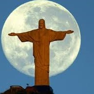
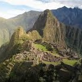
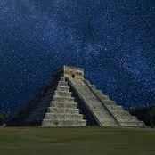
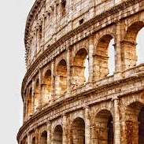
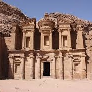
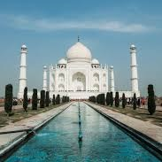
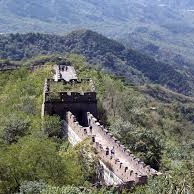

-
Cristo Redentor, Brasil.
Curiosidades
Segundo fontes históricas, o Cristo Redentor começou a ser idealizado por volta do século 19, quando o padre francês, Pierre Marie Boss, que atuava em uma igreja com vista para o morro do Corcovado. No entanto, essa ideia se perdeu e só foi resgatada tempos depois pela Princesa Isabel, em 1888. Logo depois da abolição da escravatura, muitos abolicionistas sugeriram prestar uma homenagem à princesa com uma estátua no alto do Corcovado. Entretanto, a princesa, que era apelidada de “redentora” e frequentadora da igreja do padre Boss, negou essa proposta e fez a sugestão de uma imagem do sagrado coração de Jesus. Nessa época, já havia sido feito um decreto para que a estátua do Cristo fosse feita, porém o plano não foi adiante por conta dos episódios da Proclamação da República e a separação entre Igreja e Estado, no ano de 1889. tirolesa.bondinho.com.br
-
Machu Picchu, Peru.
Curiosidades
O Santuário Histórico de Machu Picchu, ou simplesmente Machu Picchu, no Peru, é o destino dos sonhos de diversos viajantes ao redor do mundo. As surpreendentes ruínas da antiga cidade inca estão localizadas a aproximadamente 2,4 mil metros acima do nível do mar. Com uma extensão superior a 37,3 mil hectares, Machu Picchu foi declarada Patrimônio Mundial da Humanidade pela Organização das Nações Unidas para a Educação, a Ciência e a Cultura (Unesco), em 1983. nationalgeographicbrasil.com
-
Chichén Itzá, México.
Curiosidades
A pirâmide de Chichén Itzá ou Kukulcán está localizada na Península de Yucatán, México — mais precisamente no sítio arqueológico Chichén Itzá. Hoje é considerada uma das “Novas 7 Maravilhas do Mundo Moderno” e Patrimônio Mundial da UNESCO. Se quisermos entender melhor a importância desse templo, é importante fazermos uma espécie de “volta no tempo” para que possamos situá-lo no contexto político, religioso e cultural da época. De acordo com historiadores, a cidade de Chichén Itzá foi erguida pelos Maias por volta do séc. 7 d.C., e durante quase três décadas foi a “joia do norte” da Penínula de Yucatán, principalmente pela sua privilegiada condição de entreposto comercial e arrecadadora de impostos dos povoados vizinhos. conexaocancun.com.br
-
Coliseu, Itália.
Curiosidades
O Coliseu de Roma ou Anfiteatro Flaviano é um grandioso monumento histórico e arquitetônico de formato cilíndrico que está localizado na capital da Itália: Roma. Construído na Antiguidade, o Coliseu de Roma atualmente é um dos pontos turísticos mais visitados da cidade. Esse patrimônio histórico mundial revela a habilidade e as diversas técnicas utilizadas pelos arquitetos, engenheiros e construtores da Roma Antiga. É, portanto, um dos maiores exemplos da arquitetura romana. O Coliseu é também chamado de “Anfiteatro Flaviano” uma vez que a Dinastia Flaviana estava no poder quando ele foi construído. Acredita-se que o nome “Coliseu” surgiu porque ele foi construído sobre o lago da casa de Nero que contava com uma grande estátua do imperador chamada de “Colosso”. todamateria.com.br/
-
Ruínas de Petra, Jordânia.
Curiosidades
Em 1812, Johann Ludwig Burckhardt, um explorador suíço que tinha grande interesse pelo mundo árabe, descobriu as ruínas de um curioso local em meio ao deserto da Jordânia. Apelidado de "Cidade Perdida", o sítio arqueológico revelaria um impressionante estilo arquitetônico, em que as construções foram esculpidas a partir das rochas de arenito presentes na região. Uma curiosidade é que, devido à cor rósea desse tipo de pedra, Petra também é por vezes chamada de "Cidade Rosa". Os arqueólogos acreditam que o local teria sido fundado em 312 a.C. pelos nabateus, que eram um povo nômade do deserto, de forma que ele possui uma trajetória de mais de 2 mil anos. aventurasnahistoria.uol.com.br/
-
Taj Mahal, Índia.
Curiosidades
A história do Taj Mahal tem início em meados do século XVII, quando o imperador mongol Shan Jahan ordenou sua construção para honrar a memória de sua terceira esposa: Aryumand Banu Begam. Begam era uma princesa persa e a preferida do imperador. Eles se casaram em 1612 e ficaram juntos por 19 anos. Ela morreu ao dar à luz ao 14.° filho do casal. A morte da princesa abalou tanto o imperador que ele decidiu homenageá-la construindo um enorme túmulo para ela. Assim, esse luxuoso mausoléu é visto por muitos como uma das maiores provas de amor do mundo. O Taj Mahal levou cerca de 20 anos para ser erguido. A construção iniciou em 1631 e foi concluída em 1648. todamateria.com.br
-
Grande Muralha da China.
Curiosidades
Há uma história popularmente disseminada de que a estrutura é tão grande que pode ser vista até mesmo da Lua e do espaço. No entanto, a realidade não é exatamente essa. Devido à poluição e à coloração característica da Grande Muralha da China, só é possível enxergá-la a partir da órbita baixa da Terra (abaixo de 2 mil quilômetros) e da Estação Espacial Internacional (ISS, na sigla em inglês), informa a Enciclopédia Britannica. A Nasa, agência espacial norte-americana, traz uma imagem da Muralha da China captada de cima em seu site, mas faz uma ressalva sobre o registro. “Apesar dos mitos, a muralha não é visível da Lua e é difícil ou impossível de ser vista da órbita da Terra sem as lentes de alta potência usadas para essa foto.” nationalgeographicbrasil.com